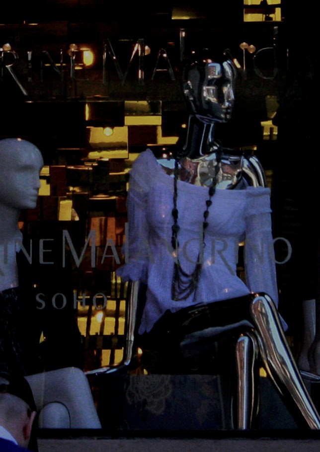
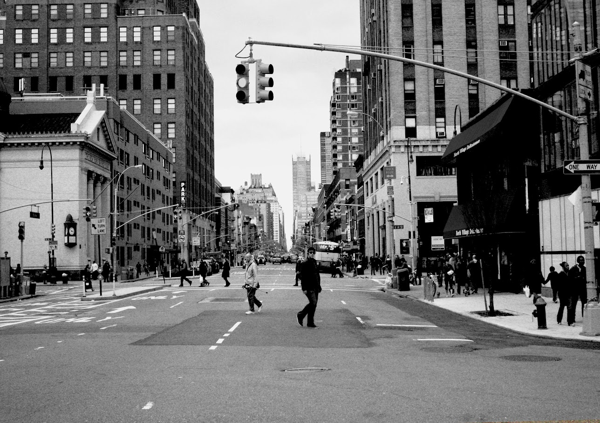
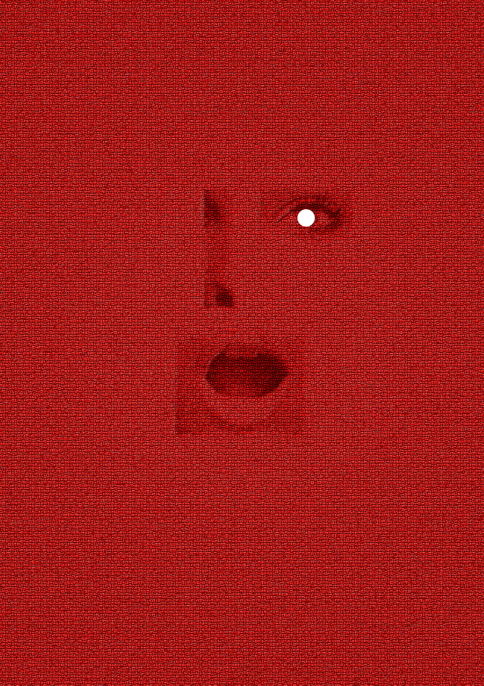

Kent’s World of Makeup Kent’s world of makeup is built on creativity, freedom, and bold self-expression. His approach blends artistry with emotion, turning every face into a unique canvas. Rather than following trends, Kent focuses on enhancing individuality—highlighting each person’s natural beauty while adding his signature touch of drama and sophistication. Drawing inspiration from New York’s vibrant street culture, high-fashion runways, and global beauty influences, Kent creates looks that are modern, dynamic, and unforgettable. His work pushes boundaries, mixing color, texture, and technique to craft makeup that tells a story. For Kent, makeup is more than cosmetics—it’s a form of communication. His world invites people to explore their identity, embrace diversity, and celebrate beauty in all its forms.




My Previous Works
My body of work reflects a deep passion for beauty, culture, and storytelling through makeup and photography. Over the years, I have created a wide range of pieces inspired by the vibrant energy of New York, the elegance of Kyoto, and the bold creativity found in fashion shows and street culture. My street photography captures raw emotion and individuality, highlighting the unique style and spirit of people in their everyday environments. The show-focused works express a more dramatic side—looks designed for runways, creative shoots, and artistic concepts that push beyond traditional makeup styles. I also explore the contrast between different cities and cultures, blending modern urban aesthetics with timeless beauty elements. Each piece represents a moment, a mood, and a perspective shaped by my experiences. These works together tell the story of my creative journey—one that continues to grow as I explore new ideas, techniques, and forms of self-expression.
